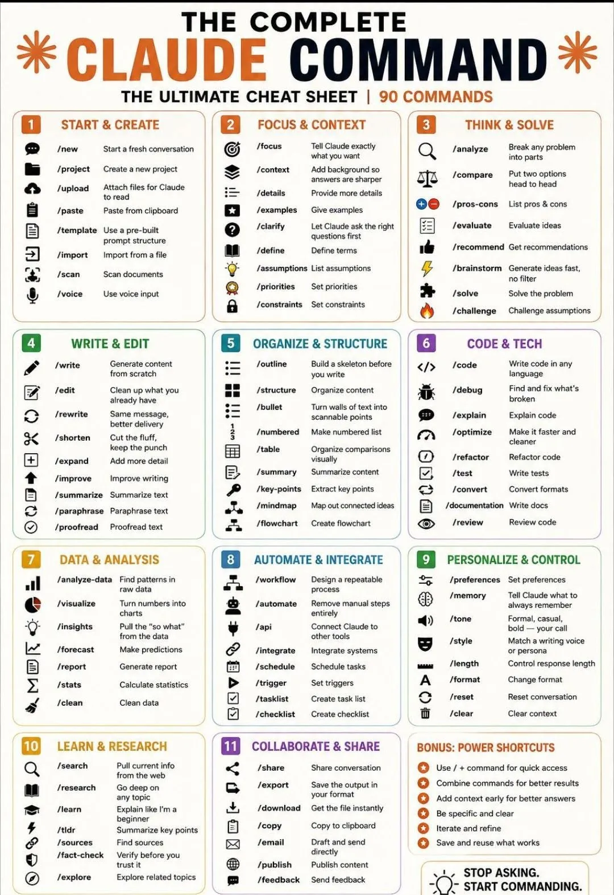

190+ 斜杠指令全收錄｜白話解釋 · 分類清楚 · 一鍵複製

以下表格依圖片分類，每個命令都附上「英文原意」與「白話用途」。學會這些斜杠指令，你就能像專業人士一樣操控 Claude，大幅提升效率。
詳細解釋這張圖片的所有功能，用簡單的用詞說明，完成後以往頁格式是呈現，完成後將上述資料轉成網頁版，網頁格式參考我的網頁架構如附件，注意保留nav和footer，標題也利用我的網頁架構！
| 分類 | 命令 | 英文描述 (圖片原文) | 💬 白話解釋 (簡單用詞) |
|---|---|---|---|
| 🚀 START & CREATE — 開始與新建 | |||
| START | /new | Start a fresh conversation | 開啟一個全新的對話，清除之前的內容。 |
| START | /project | Create a new project | 建立新專案，讓 Claude 針對特定任務集中管理。 |
| START | /upload | Attach files for Claude to read | 上傳檔案（PDF、圖片、文件等），讓 Claude 閱讀內容。 |
| START | /paste | Paste from clipboard | 直接貼上剪貼簿中的文字，快速輸入大量內容。 |
| START | /template | Use a pre-built prompt structure | 使用預先設計好的提示模板，節省打字的時間。 |
| START | /import | Import from a file | 從檔案中匯入資料（例如 CSV、JSON），讓 Claude 分析。 |
| START | /scan | Scan documents | 掃描文件，快速提取重點或關鍵資訊。 |
| START | /voice | Use voice input | 使用語音輸入，用說的取代打字。 |
| 🎯 FOCUS & CONTEXT — 聚焦與背景 | |||
| FOCUS | /focus | Tell Claude exactly what you want | 明確告訴 Claude 你想要的具體目標，讓它專注不跑題。 |
| FOCUS | /context | Add background so answers are sharper | 補充背景資訊，讓 Claude 的回答更精準。 |
| FOCUS | /details | Provide more details | 提供更多細節，幫助 Claude 理解完整脈絡。 |
| FOCUS | /examples | Give examples | 給出具體範例，讓 Claude 知道你要的風格或格式。 |
| FOCUS | /claimify | Let Claude ask the right questions first | 讓 Claude 先問你關鍵問題，釐清需求再回答。 |
| FOCUS | /define | Define terms | 定義專業術語，避免 Claude 誤解。 |
| FOCUS | /assumptions | List assumptions | 列出你預設的假設，讓 Claude 在此基礎上回應。 |
| FOCUS | /priorities | Set priorities | 設定優先順序，讓 Claude 知道哪些部分最重要。 |
| FOCUS | /constraints | Set constraints | 設定限制條件（例如時間、資源、字數），讓答案更實際。 |
| 🧠 THINK & SOLVE — 思考與解題 | |||
| THINK | /analyze | Break any problem into parts | 將任何問題拆解成小部分，逐步分析。 |
| THINK | /compare | Put two options head to head | 將兩個選項並排比較，幫助你做決定。 |
| THINK | /pros-cons | List pros & cons | 列出優點和缺點，評估利弊。 |
| THINK | /evaluate | Evaluate ideas | 評估你的想法，指出潛在風險和機會。 |
| THINK | /recommend | Get recommendations | 根據你的需求，獲得具體建議。 |
| THINK | /brainstorm | Generate ideas fast, no filter | 快速產生大量點子，不設限，激發創意。 |
| THINK | /solve | Solve the problem | 直接解決問題，給出明確答案或解決方案。 |
| THINK | /challenge | Challenge assumptions | 挑戰你的假設，幫助你發現思維盲點。 |
| ✍️ WRITE & EDIT — 寫作與編輯 | |||
| WRITE | /write | Generate content from scratch | 從零開始生成內容（文章、郵件、報告等）。 |
| WRITE | /edit | Clean up what you already have | 幫你潤飾、修改現有的文字，讓它更流暢。 |
| WRITE | /rewrite | Same message, better delivery | 改寫同樣的內容，但用更吸引人的方式表達。 |
| WRITE | /shorten | Keep the punch | 濃縮文字，保留精華，刪除多餘內容。 |
| WRITE | /expand | Add more detail | 擴充內容，補充更多細節和說明。 |
| WRITE | /improve | Improve writing | 提升寫作品質，讓用詞更精準、結構更清晰。 |
| WRITE | /summarize | Summarize text | 摘要長篇文章，快速掌握重點。 |
| WRITE | /paraphrase | Paraphrase text | 換句話說，用不同方式表達相同意思，避免抄襲。 |
| WRITE | /proofread | Proofread text | 校對文字，檢查錯字、標點和文法錯誤。 |
| 📂 ORGANIZE & STRUCTURE — 組織與結構 | |||
| ORGANIZE | /outline | Build a skeleton before you write | 寫作前先建立大綱，規劃內容架構。 |
| ORGANIZE | /structure | Organize content | 重新整理內容，讓邏輯順序更清楚。 |
| ORGANIZE | /bullet | Turn walls of text into scannable points | 將一大段文字轉成條列式重點，方便閱讀。 |
| ORGANIZE | /numbered | Make numbered list | 製作編號清單，適用於步驟或順序性內容。 |
| ORGANIZE | /table | Organize comparisons visually | 用表格視覺化比較不同項目的差異。 |
| ORGANIZE | /summary | Summarize content | 總結內容，濃縮成幾句精華。 |
| ORGANIZE | /key-points | Extract key points | 提取關鍵要點，抓出最重要的訊息。 |
| ORGANIZE | /mindmap | Map out connected ideas | 繪製心智圖，呈現想法之間的關聯。 |
| ORGANIZE | /flowchart | Create flowchart | 建立流程圖，說明步驟或決策路徑。 |
| 💻 CODE & TECH — 程式碼與技術 | |||
| CODE | /code | Write code in any language | 用任何程式語言寫出程式碼。 |
| CODE | /debug | Find and fix what's broken | 找出程式中的錯誤並提供修復方法。 |
| CODE | /explain | Explain code | 解釋程式碼的邏輯和功能，幫助你理解。 |
| CODE | /optimize | Make it faster and cleaner | 優化程式碼，讓它跑得更快、更簡潔。 |
| CODE | /refactor | Refactor code | 重構程式碼，改善結構但不改變功能。 |
| CODE | /test | Write tests | 為你的程式碼編寫測試案例，確保品質。 |
| CODE | /convert | Convert formats | 轉換程式碼或檔案格式（例如 JSON to CSV）。 |
| CODE | /documentation | Write docs | 撰寫技術文件或 API 說明文檔。 |
| CODE | /review | Review code | 審查程式碼，指出潛在問題和改進建議。 |
| 📊 DATA & ANALYSIS — 數據與分析 | |||
| DATA | /analyze-data | Find patterns in raw data | 從原始數據中找出規律或趨勢。 |
| DATA | /visualize | Turn numbers into charts | 將數據轉換成圖表，視覺化呈現。 |
| DATA | /insights | Pull the "so what" | 歸納數據背後的洞見，告訴你「然後呢？」 |
| DATA | /forecast | Make predictions | 根據歷史數據做出預測。 |
| DATA | /report | Generate report | 自動產生數據分析報告，含圖表和結論。 |
| DATA | /stats | Calculate statistics | 計算統計數據（平均數、標準差等）。 |
| DATA | /clean | Clean data | 清理髒數據，移除重複或錯誤值。 |
| ⚙️ AUTOMATE & INTEGRATE — 自動化與整合 | |||
| AUTO | /workflow | Design a repeatable process | 設計可重複的工作流程，標準化作業。 |
| AUTO | /automate | Remove manual steps | 自動化手動步驟，節省時間。 |
| AUTO | /api | Connect Claude to other tools | 串接 API，讓 Claude 與其他工具協作。 |
| AUTO | /integrate | Integrate systems | 整合不同系統，讓資料流通。 |
| AUTO | /schedule | Schedule tasks | 安排任務時程，設定執行時間。 |
| AUTO | /trigger | Set triggers | 設定觸發條件，當條件滿足時自動執行動作。 |
| AUTO | /tasklist | Create task list | 建立任務清單，追蹤進度。 |
| AUTO | /checklist | Create checklist | 製作檢查清單，確保步驟不漏。 |
| 🎛️ PERSONALIZE & CONTROL — 個人化與控制 | |||
| PERSONAL | /preferences | Set preferences | 設定個人偏好（例如語言、單位）。 |
| PERSONAL | /memory | Tell Claude what to always remember | 告訴 Claude 要記住的內容，讓它長期記憶。 |
| PERSONAL | /tone | Formal, casual, your call | 調整語氣（正式、輕鬆等），任你選擇。 |
| PERSONAL | /style | Match a writing voice or persona | 模仿特定寫作風格或人格，例如模仿某位作家。 |
| PERSONAL | /length | Control response length | 控制回答的長短（簡短、詳細等）。 |
| PERSONAL | /format | Change format | 改變輸出格式（例如 Markdown、純文字）。 |
| PERSONAL | /reset | Reset conversation | 重置對話，清除所有上下文，重新開始。 |
| PERSONAL | /clear | Clear context | 清除當前上下文，但不重置整個對話。 |
| 🔍 LEARN & RESEARCH — 學習與研究 | |||
| LEARN | /search | Pull current info from the web | 從網路抓取最新資訊，即時查詢。 |
| LEARN | /research | Go deep on any topic | 深入研究任何主題，提供詳盡的資料整理。 |
| LEARN | /learn | Explain like I'm a... | 用簡單方式解釋複雜概念（例如「像教 10 歲小孩」）。 |
| LEARN | /tldr | Summarize key points | 太長了，濃縮成幾句話的重點。 |
| LEARN | /sources | Find sources | 查找資訊來源，提供參考文獻或連結。 |
| LEARN | /fact-check | Verify before you trust it | 事實查核，確認資訊正確性再相信。 |
| LEARN | /explore | Explore related topics | 探索相關主題，拓展知識廣度。 |
| 🤝 COLLABORATE & SHARE — 協作與分享 | |||
| COLLAB | /share | Share conversation | 分享對話記錄給其他人。 |
| COLLAB | /export | Save the output in your format | 匯出結果，選擇你需要的格式（PDF、TXT 等）。 |
| COLLAB | /download | Get the file instantly | 立即下載生成的文件或報告。 |
| COLLAB | /copy | Copy to clipboard | 複製內容到剪貼簿，方便貼到其他地方。 |
| COLLAB | Draft and send directly | 草擬郵件並可直接發送（需設定）。 | |
| COLLAB | /publish | Publish content | 發布內容到部落格或社群平台。 |
| COLLAB | /feedback | Send feedback | 發送回饋意見給開發者或團隊。 |
| ⚡ BONUS: POWER SHORTCUTS — 超強快捷技巧 | |||
| BONUS |
Use /+command for quick access
直接輸入斜槓+指令名稱，快速啟用。 Combine commands for better results 組合多個指令，效果更強大（例如 /write + /shorten）。 Add context early for better answers 早點給背景資訊，答案會更精準。 Be specific and clear 指令越明確，Claude 越懂你。 Iterate and refine 可以來回修改，逐步完善結果。 Save and reuse what works 把好用的指令組合存起來，下次直接套用。 |
||
把這些斜槓指令當作你的「快捷鍵」，直接告訴 Claude 你要做什麼，它就能立刻化身為寫手、工程師、分析師、設計師…… 讓 AI 真正成為你的超強戰友。
{kind=link}